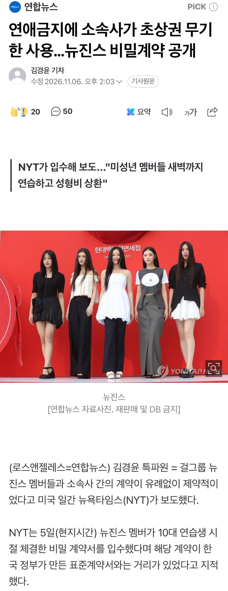

https://n.news.naver.com/article/001/0016426356?sid=104
이 계약서에는 미성년자인 대중문화예술인의 학습권과 수면권, 휴식권 등을 보장해야 한다는 내용과 청소년 공연자가 과도한 시간 동안 서비스를 제공해서는 안 된다는 조항이 빠졌다.
뉴진스 멤버들은 새벽 2시까지 연습하는 일이 적지 않았고, 트레이닝 공간도 비디오카메라로 녹화됐다고 NYT가 그룹 관계자를 인용해 전했다. 멤버 5명 가운데 4명은 학교를 자퇴했다.
...
NYT는 이외에도 회사의 의사로 계약을 해지하더라도 거액의 위약금을 물도록 한 조항, 미용 목적의 시술 권유도 이뤄졌다는 점 등을 문제 삼았다.
복수의 관계자에 따르면 데뷔 전 멤버들이 여러 각도에서 사진을 찍었고, 소속사 어도어 측이 멤버 가운데 몇 명을 상대로 미용 시술을 제안한 것으로 알려졌다.
계약서에는 소속사가 연습생 기간에 성형수술과 기타 미용 시술에 지출한 돈의 상당 부분을 멤버들이 상환해야 한다는 내용도 담겼다.
음.. 그래서?